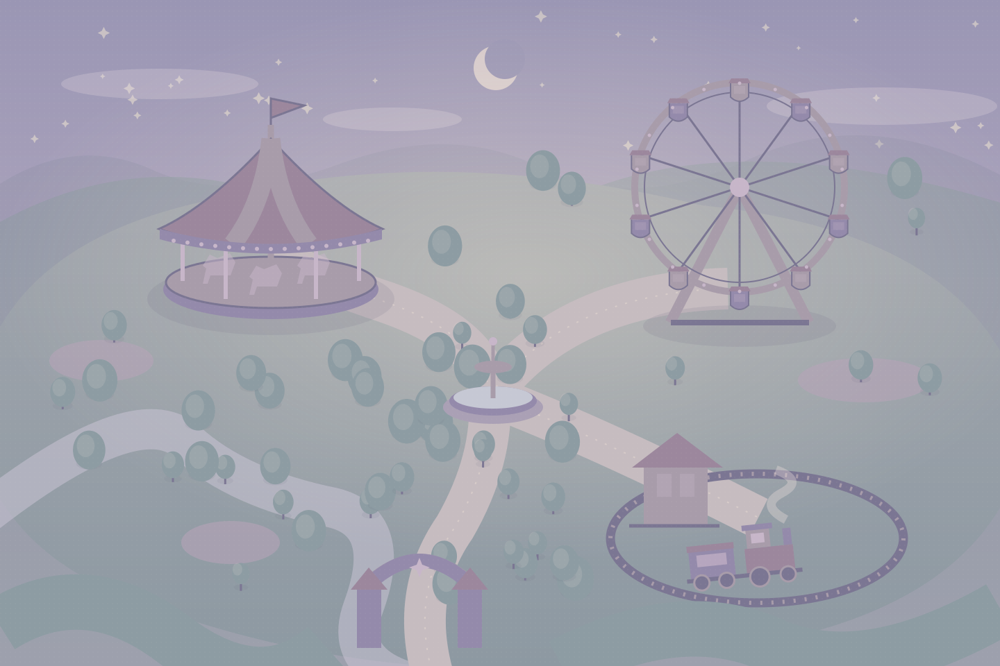

ようこそ、思い出の遊園地へ！
Remember My Park
もう一度、ここにあかりを。
眠っていた遊園地で、思い出の続きを。
気になるアトラクションを選んでね。
★ 思い出の遊園地あかり 0 / 3

配置確認用の仮マップどこからでも、あなたの好きな順番で。
PARK MAP 01どの思い出に、会いにいく？
DEV あかりの切り替え開発用プレビュー
施設ごとの復活を試せます。再読み込みすると元に戻ります。
画像素材を確認しています。
ようこそ、思い出の遊園地へ！
もう一度、ここにあかりを。
眠っていた遊園地で、思い出の続きを。
気になるアトラクションを選んでね。

配置確認用の仮マップどこからでも、あなたの好きな順番で。
PARK MAP 01施設ごとの復活を試せます。再読み込みすると元に戻ります。
画像素材を確認しています。